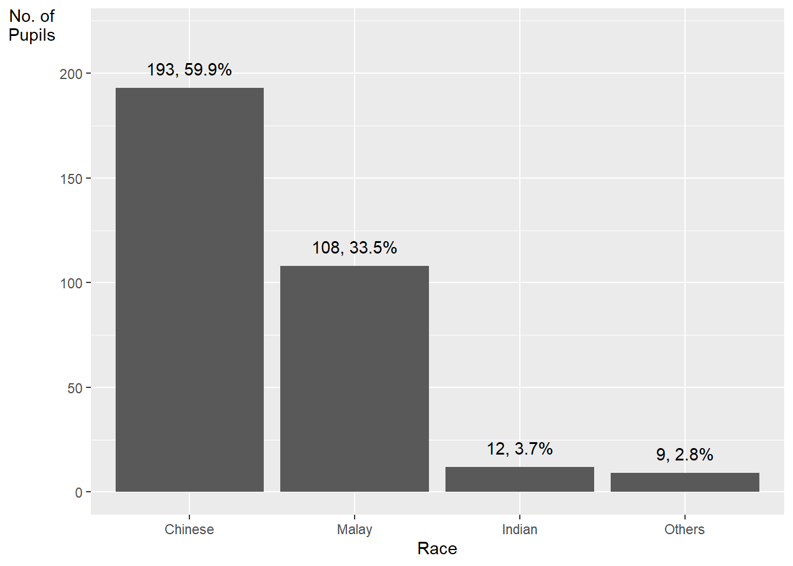
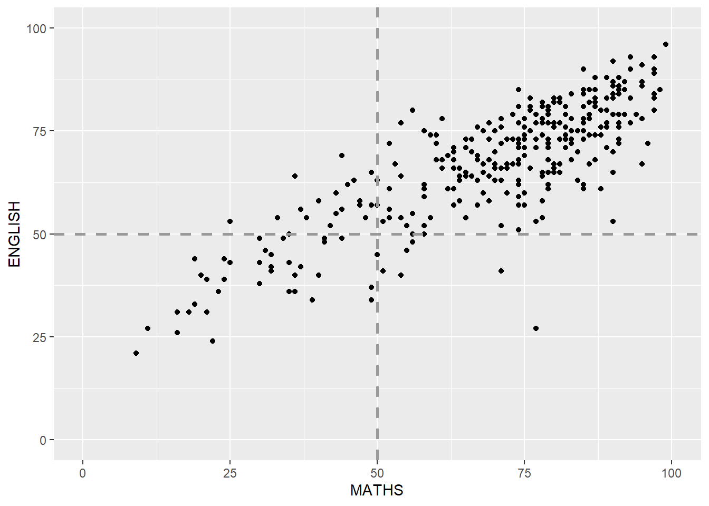

pacman::p_load(tidyverse)In-class_Ex1
In this exercise, we will go through how to customize your charts using ggplot
Getting Start
- Using
p_load()of pacman package to load tidyverse on (p_load()is more convenient thanlibrary()as it can install multiple packages at one time)
- Import data
show_col_types = FALSE can conceal the summary of the table
exam_data<- read_csv('data/Exam_data.csv', show_col_types = FALSE)Customize Charts
coord_flip(): flip the chartTheme_minimal(): make the background whitepanel.background: can change background color- panel.grid.major vs panel.grid.minor
ggplot(exam_data, aes(x=RACE))+
geom_bar()+
coord_flip()+
theme_minimal()+
theme(
panel.background = element_rect(fill = "lightblue", colour='lightblue',size = 0.5, linetype = 'solid'),
panel.grid.major = element_line(size = 0.5, linetype = 'solid', colour = "black"),
panel.grid.minor = element_line(size = 0.25, linetype = 'solid', colour = "white"))Warning: The `size` argument of `element_rect()` is deprecated as of ggplot2 3.4.0.
ℹ Please use the `linewidth` argument instead.Warning: The `size` argument of `element_line()` is deprecated as of ggplot2 3.4.0.
ℹ Please use the `linewidth` argument instead.reorder():reorder(variable_to_reorder, variable_to_use_for_ordering, summary_statistic_function)default is ascending order, so if we want to make it descending, we need to negate the variables first
..count..: represents the count of observations for each group, which comes from stat=‘count’vjust: adjust the position of the text.(options: 1,0,-1)
theme(axis.title.y=element_text(angle = 0)): this makes y label horizontal
ggplot(exam_data, aes(x=reorder(RACE, RACE, function(x) -length(x))))+
geom_bar()+
ylim(0,220)+
geom_text(stat = 'count',
aes(label=paste0(..count..,',',round(..count../sum(..count..)*100,1),'%')), vjust=-1)+
xlab('Race')+
ylab('No. of\n Pupils')+
theme(axis.title.y=element_text(angle = 0))Warning: The dot-dot notation (`..count..`) was deprecated in ggplot2 3.4.0.
ℹ Please use `after_stat(count)` instead.The same graph can also be generated by fct_infreq package. fct_infreq reorder the levels of a factor based on their frequency. The mutate() function creates a new variable RACE in the exam_data data frame that is the same as the original RACE variable, but with the levels reordered based on their frequency. The new variable RACE is then returned as a modified data frame.
exam_data %>%
mutate(RACE = fct_infreq(RACE)) %>%
ggplot(aes(x = RACE)) +
geom_bar()+
ylim(0,220) +
geom_text(stat="count",
aes(label=paste0(..count.., ", ",
round(..count../sum(..count..)*100,
1), "%")),
vjust=-1) +
xlab("Race") +
ylab("No. of\nPupils") +
theme(axis.title.y=element_text(angle = 0))
geom_vline: xintercept specifies the position of the line along the x-axis; size sets the line thickness to 1
ggplot(data=exam_data,
aes(x=MATHS))+
geom_histogram(bins = 20,
color='black',
fill='light blue')+
geom_vline(aes(xintercept=mean(MATHS, na.rm=T)),
color='red',
linetype='dashed',
size=1)+
geom_vline(aes(xintercept=median(MATHS, na.rm=T)),
color="grey30",
linetype="dashed",
size=1)Warning: Using `size` aesthetic for lines was deprecated in ggplot2 3.4.0.
ℹ Please use `linewidth` instead.
The
geom_histogram()function is used twice in this code. The first call togeom_histogram()specifies adataargument ofd_bg, which is a modified version of the original data framedwith the third column removed. This creates a histogram that overlays the original histogram, using a grey fill color and an alpha (transparency) value of 0.5.The second call to
geom_histogram()does not specify adataargument, so it uses the originalddata frame.The
facet_wrap()function is used to split the histogram into two panels, one for each value of theGENDERvariable.The
guides(fill = FALSE)argument is used to remove the legend for the fill color, since it is already clear from the facetting which color corresponds to which gender.
d <- exam_data
d_bg <- d[, -3]
ggplot(d, aes(x = ENGLISH, fill = GENDER)) +
geom_histogram(data = d_bg, fill = "grey", alpha = .5) +
geom_histogram(colour = "black") +
facet_wrap(~ GENDER) +
guides(fill = 'none') +
theme_bw()`stat_bin()` using `bins = 30`. Pick better value with `binwidth`.
`stat_bin()` using `bins = 30`. Pick better value with `binwidth`.
coord_cartesianset the plot limits for x and y axisyinterceptadds a horizontal line at y = 50
ggplot(data=exam_data,
aes(x=MATHS, y=ENGLISH)) +
geom_point() +
coord_cartesian(xlim=c(0,100),
ylim=c(0,100)) +
geom_hline(yintercept=50,
linetype="dashed",
color="grey60",
size=1) +
geom_vline(xintercept=50,
linetype="dashed",
color="grey60",
size=1)